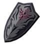
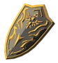
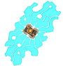

Les boucliers dans ce jeu sont incontournable. En effet, sans, vous allez avoir du mal à tenir tête aux plus coriaces. C'est possible, mais il faudrait une maitrises sans faille sans quoi pouvez y laisser la vie très facilement. Utilisez les à bon escient. On oublie souvent de les récupérer mais ils sont tellement utile sur le champ de bataille qu'ils sont essentiel pour garder l'avantage. Voici une liste des boucliers les plus utiles et résistants ( et mes préférés par ailleurs :p ):
| Nom | Description | Image |
|---|---|---|
| Bouclier d'Hylia Garde : 90 Solidité: 800 |
Bouclier ultime, qui a une solidité inouïe, quasiment incassable. Récupérable au château d'Hyrule en battant un mini-boss bien caché. | |
| Bouclier de Garde Royal Garde: 70 Solidité: 14 |
Bouclier fragile qui défend bien les coups. Trouvable au château d'Hyrule en trifouillant une salle bien précise. |  |
| Bouclier Royal Garde: 55 Solidité: 29 |
Excellent bouclier, alliant résistance et défense. Il peut être récupérer au château d'Hyrule. |  |
| Bouclier du Dieu Bestial Garde: 62 Solidité: 20 |
Bouclier incroyablement fort. Il vous faudra triompher un lynel pour le récupérer. | |
| Bouclier de Gardien 3.0 Garde: 42 Solidité: 20 |
Éliminer un gardien pour avoir ce bouclier qui pourra vous être utile au cas où vous n'en aurez plus. |  |
| Bouclier Archéonique Garde: 32 Solidité: 70 |
Le bouclier ultime contre les Gradiens car il a pour exploit de pouvoir renvoyer les lasers meurtriers à leur envoyeur. À acheter auprès de Faras à Akkala. |